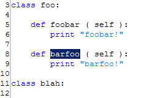
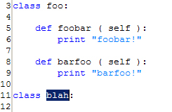

<!--===============================================================================================

	File:		editor_nmc.html

	Author:		Parhaum Toofanian, Copyright 2004
	Contact:	ptoofani@andrew.cmu.edu
	Created:	2004-06-14
	Modified:	2004-06-14

	Part of PyDev User Guide in Eclipse.  Describes information about Goto Next Method/Class
	in the plug-in, along with screenshots and helpful information on hotkeys.

================================================================================================-->


<!doctype html public "-//w3c//dtd html 4.0 transitional//en">
<html>

	<head>
		<script src = "includes/script.js" language="javascript" type="text/javascript"></script>
		<link rel = stylesheet href = "includes/style.css" type = "text/css">
		<meta http-equiv="Content-Type" content="text/html; charset=iso-8859-1">
		<title>PyDev User Guide</title>
	</head>

	<body>

		<script language="javascript">
			var heads 	= new Array ( );
			var links 	= new Array ( );
			var i 		= 0;

			heads[i] 	= 'PyDev User Guide';
			links[i++] 	= 'index.html';

			heads[i] 	= 'Editor';
			links[i++] 	= 'editor.html';

			heads[i] 	= 'Go to Next Method/Class';
			links[i++]	 = 'editor_gotonmc.html';

			writeHeading ( heads, links );
		</script>

		<!-- Description -->
		<script language="javascript">
			var headline = 	'Description';
			var desc	= 	'...';

			writeGeneric ( headline, desc );
		</script>

		<!-- Invocation -->
		<script language="javascript">
			var rows = new Array ( );
			var hotkeys = new Array ( );

			rows[0] 	= 6;

			hotkeys[0] 	= 'Ctrl+Shift+Arrow_Down';

			var desc	= '';

			writeInvocation ( rows, hotkeys, desc );
		</script>

		<!-- Process -->
		<script language="javascript">
			var headline = 	'Process';
			var desc = 		'From the location your cursor is positioned, invoking this action will ' +
							'cause the cursor to jump to and highlight the next method or class in ' +
							'the document.<br><br>' +
							'Invoking the action with the cursor here within method foobar:<br><br>' +
							'<br><br>' +
							'Jumps to and highlights method barfoo:<br><br>' +
							'<br><br>' +
							'From here, invoking the action again jumps to class blah:<br><br>' +
							'';

			writeGeneric ( headline, desc );
		</script>

		<!-- Selection -->
		<script language="javascript">
			var headline = 	'Selection';
			var desc = 		'Highlighting or locating the cursor in a region within a method or class ' +
							'and invoking this action causes the cursor to jump to the next method or ' +
							'class.';

			writeGeneric ( headline, desc );
		</script>

	</body>

</html>